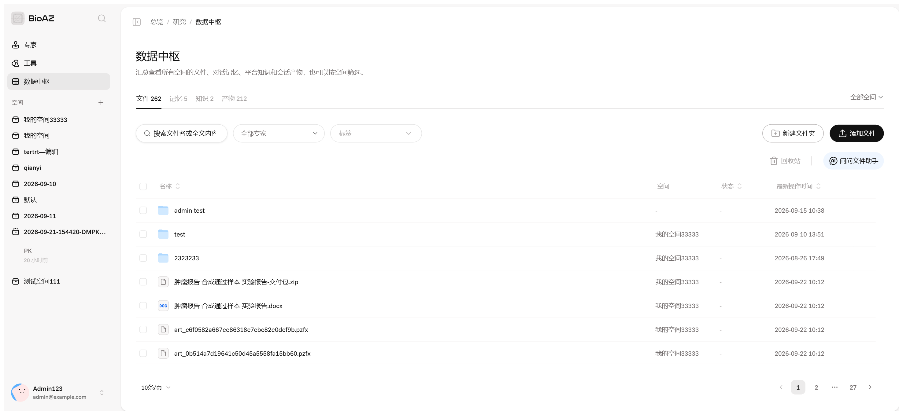
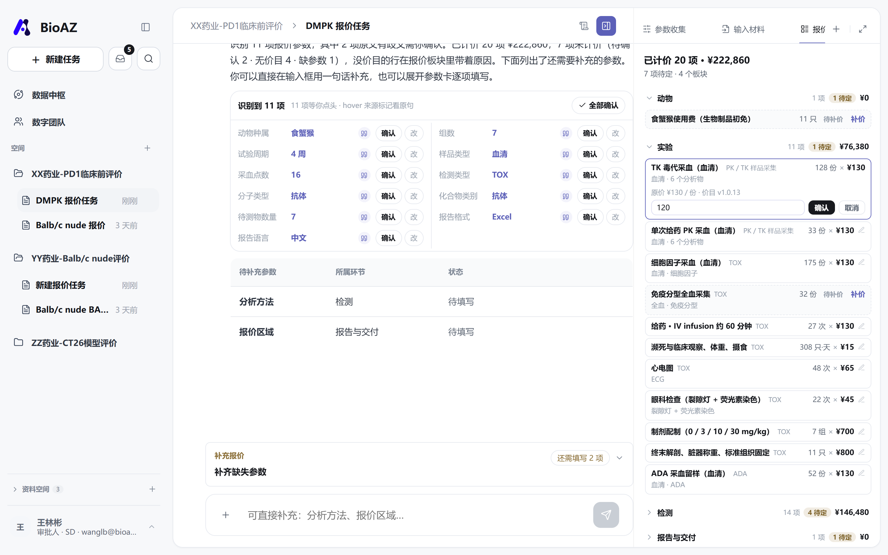

三列是同一套左任务、中对话、右面板——beta5 的会话页也是这个形状。不一样的在右栏，还有右栏后面那条链。

右栏一张「报价参数收集 13/13」的卡，四组完成度；参数靠打字，一段话二十项。形状跟我们一样，右栏是死的。

也是三列；右栏是三个常驻 tab 加一个「+」（参数收集、报价板块、报价结果）。中间的对话流、参数卡、产物卡，两边长得一样。
位置固定的面板容器一开始想学 Codex、Claude Code 那种想放哪放哪的面板，试了一轮：太灵活，用户得先学面板，跟报价这件事也不贴。收回来——右栏位置固定，里面是可以搭配的面板和 tab，能加、能并列、能全屏、能收起。


四条业务线，一副架子DMPK 报价、肿瘤报价、QA 审核、肿瘤报告都在同一个壳里：侧栏、站内信、数据中枢、三列都一样，只有右栏登记的 tab 不一样。

右栏登记的是原件、AI 审核、差异、批注；中间是对话加审核画布。壳一个字没改。

和 DMPK 报价用的是同一套参数卡、chips、台账，组件共用，字段不同；右栏是它自己的三个 tab。
工作流与对话流beta5 的会话是追问参数、用户打一段、出一张费用卡。我们的会话是一条链：材料进来，到报价交出去、被复核、被退回、再重出，都在这一个会话里。
「还需要补充共 11 项信息」，用户一段话补二十项，然后「报价已生成成功」，一张费用明细卡加两个文件。参数靠打字，改价没有路径，交出去之后没有下文。

一句话或一份方案进来，解析轨迹加原文依据；参数卡按动物 / 实验 / 检测分页、缺什么问什么；右栏当场成账；改价补价；出 Word 和 Excel；交接卡交出去；对方在站内信里复核；退回的批注回到会话；重出 v2。
空间与入口页项目还是空间只是叫法。从 beta5 借的是专家按空间配置；入口页我们做成了这个空间的门，专家卡 hover 出介绍。

一句问候加输入框加专家 chip，底下四个数字（文件、记忆、知识、产物）和专家头像。

空间插画加标签，四张专家卡 hover 出介绍，右上「配置专家」，底下概览三张卡。任务还是第一句话发出去才建。
文件、产物、来源会话两边都有「产物」，也都记它来自哪条会话；beta5 多「记忆」「知识」两档。

文件、记忆、知识、产物四档，按空间筛，有回收站和「问问文件助手」。

根级「全部文件 | 产物」两段，产物多一列来源任务，点进那条会话。
人、站内信、工单、复核beta5 里没有「人」：没有账号角色、没有交接、没有审批。我们的工作流里，报价是交出去、被复核、被退回、再重出的。

待办和动态分开；工单带附件、时间线、处理人；交接从会话里一键发出——刚交过来的「请复核：DMPK 报价任务」就在最上面。

审核人看的是同一份草稿：计算表、报价书之外多一页「依据与变更」——每项参数从材料哪一节读的、原句是什么，人改过的写「原文为 X，已改为 Y」；右边是这一版改了什么。批完退回，批注回到撰写人的会话，改参数，重出 v2。
权限，和「+」里的技能、连接器权限分级会上说往后放；我们用账号切换器演出来"同一单在 SD 和 SD 助理眼里各是什么样"。

技能 = 让数字同事现在就做（总结、列价目、核对、预览、生成，做不了的灰掉写原因）；连接器 = 本会话在读哪些源（项目文件库、计价规则库）。
| SD 助理 | SD | |
|---|---|---|
| 看板块 / 参数 / 价格 | ✓ | ✓ |
| 改临时价 / 补价 | ✓ | ✓ |
| 完整价目表 | 一行说明 | ✓ |
| 后台改底表 | 只读 | ✓ |
赵敏 = SD 助理，王林彬、李林 = SD。级别显示在左下角账号行。
先打一句话，右边就是账会上定的：右栏不再收集参数，只放已收集参数的状态和对应单价。
说先从最简单的开始。我在输入框打一句"PK 小分子，SD 大鼠，每组 6 只，3 组，两周，血浆，中文报告"。右边这一栏现在就是会上说的那个样子了：按动物、实验、检测、报告与交付四块分，每行就一个数量乘单价，能收起来。参数还没给的行写"缺参数"，点一下过去填，不会在右边让你填。
下面是「已计算的项目金额（非整单总价）」——每项一个数，后面跟一长串适用范围。
右栏回答的是"还差什么、填给我"：缺失参数、确认项、待补价格、待系统补齐四类，每项一个"为什么需要这项？"。金额是有的，混在文字里，没有账的形状。

右栏是账：按动物、实验、检测、报告与交付四类分板块，和参数收集那四张卡一一对应；行里只有数量 × 单价，工作包（PK/TK、TOX、ADA）写成行上的小标。账不等参数齐：填一项亮一行，缺的写「去填」。
参数收集分四类，八维在下层上层是动物、实验、检测、报告与交付，跟报价板块一一对应；P0 那八维留给提取和材料面板，展示上不带序号。
说参数收集挪到旁边这个页签了，分四张卡：动物、实验、检测、报告与交付——跟右边报价板块的四块是一一对应的，给甲方的报价单也按这四类分。字段还是原来那十四个，一个没动，就是分法改了。P0 方案里那八维（动物、组别、数目、操作、次数、检测项目、方法、数量）留在下层给提取用，展示上不标序号了。
四张卡：动物（种属、组数、每组只数）、实验（周期、样品类型、采血点数）、检测（检测类型、分子类型、化合物类别、方法、待测物数量）、报告与交付；下面是方案里读出来的别的工作包。右边「输入材料」里读出来的事实按八维排，不带序号。
- 动物→ 动物 · 动物种属
- 组别→ 动物 · 组数
- 数目→ 动物 · 每组动物数
- 实验操作→ 实验 · 样品类型；板块里的行
- 操作次数→ 实验 · 采血点数 · 试验周期
- 检测项目→ 检测 · 检测类型 · 分子类型 · 化合物类别
- 检测方法→ 检测 · 分析方法
- 检测数量→ 检测 · 待测物数量；每行的份数
八维怎么落到四类和十四项上（这张表给 Agent 提取用，不在界面上标）。方案后几层的几条也补了：每化合物少于 30 份按 30 计；猴类价、折扣、其他费用是人工项；BA Only 不问动物参数，台账写「不适用」；改一项参数，对话里说影响了哪几行、合计从多少到多少。
再搭一块会上说的"TOX 的卡片在下面再长出一个卡片"。
说然后是搭积木。台账最下面有个"再搭一块"，我点一下 TOX，下面就多出一张 TOX 的卡，右边板块那边也同时多一段，对话里会告诉你多了几行、还缺什么。这块我拿不准，想听大家说：每个板块自己的组和时点放哪儿。现在整单就一套采血点数，方案里 TK 是 16 个点、PK 是 11 个、临床病理是 6 个，三套，我还没想好怎么摆。

台账下面再长一张「TOX · 搭上的」：实验操作、次数、方法、数量各一行，缺的写「待填写」，点了去填；右边板块里实验、检测两块各多几行，标着 TOX。「去掉这块」能拆。
再搭的板块记在会话上账里当场长出那一段，行大多缺参数、指回参数卡那一格；填一格亮一行；拆掉就收回。加、拆都进对话，也进快照——出过版之后再搭，版本卡标「待重出」。
这是"检测项目多选"在现有模型上的落法：检测类型定主板块，加搭上去的板块，等于这一单做什么。
传一份方案，正文里溯源读完在正文列出认到的每一项，hover 来源标记看原句，逐项点头；右栏留给账（下午陈曦慧定的）。
说传方案是这样。我把 BB-001 那个 docx 拖进来，它读一遍，回复下面直接列出认到的十一项，每项后面一个小标，鼠标放上去能看到是从材料哪一节、哪句话读的。对的就点确认，或者右上角一键全确认；不对点"改"。没确认之前它标着"识别"，右边台账上也是——机器读的是提议，人点头才算数。
「已读取 BB-001 方案」下面一张识别清单：11 项，每项带来源小标，hover 出原句，逐项「确认」或「改」，右上「全部确认」；再往下是还缺的项。已计价 20 项 ¥222,860，7 项未计价各带原因。

「输入材料」面板：读出来的事实按八维排（不带序号），每条带原文位置（§1、表 2、表 3），能展开看明细；没归到八维的排最后。
改价、补价、折扣，一条路会上定的：改价是临时调价唯一的路，只动这一单，价目表不动。
说改价是改得最多的地方。每一行单价旁边有支笔，点开先给你看原价，填个新的，确认，就只改这一单，价目表不碰。像猴价这种本来就没有价目的，也是在这儿补一个。折扣和其他费用在最底下单独一行，我按方案里说的做成人工项了，不当价目。接下来任何一次改参数，回复里都会说影响了哪几行、合计从多少到多少。

TK 毒代采血：原价 ¥130 → 填 120 → 确认。行上挂「临时价 · 原 ¥130 · 恢复」，对话里一句「仅本次报价，价目表不动」。

食蟹猴使用费没有价目，标「待补价」，人给 ¥30,000 只作用于本单；尾卡「人工调整项」记 0.9 折，多一行「调整后」。纸面的 Discounted 按调整后算，Standard 按价目。
价目表不进对话，权限先能演会上定的：完整价目表单独入口；权限分级往后放。
说完整的价目表没放进对话里，底下有个入口进后台看，没权限的人看到的是一行灰字。不过可以在对话里问一句"这单用了哪些价"，它会回一张这一单的表，不是全表。权限我先做了个能演的：账号分 SD 和 SD 助理，助理能改临时价，看不到底表，进后台是只读。真的权限分级会上说往后放，这里就是先能看出区别。

「列出本单命中的价目」——费用项目、板块、单价、本单用量、状态。同一档价折一行，临时价带原价，无价目另起。谁都能问，那不是完整表。

「查看完整价目表 →」进报价管理，页首一行：这里是全局，改本单回会话。SD 助理进来是只读；进后台再返回，会话原样还在。
交接，复核，退回审核人看的是同一份草稿——P0 第五层点名要的。
说最后是交接。参数齐了生成报价单，交给李林，我切到李林的账号，站内信里就收到了，点开始审核。他看到的是同一份东西，计算表旁边多了一页"依据与变更"：每项参数从材料哪句读的、谁改过什么、这一版改了哪些价，都在这一页。批完退回，批注回到我这边的会话，改完重出 v2。
刚交过来的「请复核：DMPK 报价任务」在最上面；工单带附件、时间线、处理人。
左边 14 项参数各自读自材料哪一节、原句是什么，人填的标「人填的」；右边这一版改了什么——改价 ¥130 → ¥120、补价 ¥30,000、折扣 0.9、v1 首次生成，谁、什么时候。
和工程师版 beta3 跑同一份方案他那五层每一格都落得进八维，骨架一样；差的是颗粒度。
说如果问到和工程师那版的关系：我今天早上把 beta3 跑 BB-001 的结果过了一遍。他那五层东西——概览、分组表、37 行采样、三个工作包、34 行报价——每一格都能落进八维，一个不漏，所以骨架是一样的。差的是颗粒度：他是每组、每个采样事件、每个分析物各一份，我们现在整单一份。那一层要补，得先有板块字段表。
| 项目 / 范围 | 数量及依据 | 计算方式 | 金额 | 状态 |
|---|---|---|---|---|
| 11只食蟹猴（生物制品初免）使用费，8只核心Q1W×3、3只卫星单次给药，28天观察期；单价需用户提供USD/只；1组 核心 对照 载体；2组 核心 低剂量 BB-001；2组 卫星 低剂量 BB-001 单次给药；3组 核心 中剂量 BB-001；… | 11只；价目公式合计；原数量：整项 | 2 × 5000；10000 × 6.5；2 × 5000；10000 × 6.5；2 × 5000；10000 × 6.5；2 × 5000；10000 × 6.5；1 × 5000；5000 × 6.5；… | 357,500 CNY | 已计算 |
| 核心组TK毒代采血，D1及D15给药后丰富采样、D8给药前谷浓度、D28终末；4个组别各自采集；1组 核心 对照 载体；2组 核心 低剂量 BB-001；…；核心组TK毒代采血（血清）；对照核心组TK毒代采血（血清）；… | 128次；价目公式合计；原数量：128次 | 32 × 20；640 × 1；640 × 6.5；32 × 20；640 × 1；640 × 6.5；… | 16,640 CNY | 已计算 |
| 游离 IMQ 的PK/TK样品检测，LC-MS/MS · 游离 IMQ 检测；核心组TK毒代采血（血清）；对照核心组TK毒代采血（血清）；3组核心TK毒代采血（血清）；4组核心TK毒代采血（血清）；2组卫星单次给药PK采血（血清）；… | 153份；价目公式合计；原数量：委托检测153份 | 153 × 20；3060 × 1；3060 × 1.5；4590 × 6.5 | 29,835 CNY | 已计算 |
| 细胞因子检测；10-plex细胞因子检测（IL-6、TNF-α、IL-1β、IL-18、IL-12p70、IFN-γ、IFN-α、CXCL10、IL-10、CCL4），核心组与卫星组细胞因子样品；对照核心组细胞因子采血（血清）；…；project | 1项；189份×项 | 待补齐后计算 | — | 范围待确认 |
| 免疫分型全血采集：Panel A 淋巴细胞亚群（CD45/CD3/CD4/CD8/CD16/CD20）D1给药前、D8、D15、D28；Panel B 髓系活化（CD45/CD14/CD16/HLA-DR/CD86/CD69）每次核心组给药前及给药后4h、24h及D28终末（复用细胞因子采血）；… | 1项；按本行范围整体报价 | 待补齐后计算 | — | 待补价格或数量 |
| 濒死与临床观察，输注中及输注结束、给药后1/2/4/6/24h输注反应监测，体重及定性摄食量观察；1组 核心 对照 载体；2组 核心 低剂量 BB-001；2组 卫星 低剂量 BB-001 单次给药；… | 1项；价目公式合计；原数量：整项 | 399 × 2；798 × 4；3192 × 6.5；399 × 2；798 × 4；3192 × 6.5；…；50 × 1；1 × 215；求和([50，215])；265 × 6.5；… | 88,159.5 CNY | 已计算 |
已知小计（非整单总价）：848,344.5 CNY · 34 个目录价项目已完成计算 · 右栏「补充报价」还需处理 11 项（缺失参数 / 确认项 / 待补价格 / 待系统补齐）
上面还有四层：实验概览 12 项、动物分组 7 行、样品与检测 37 行、三个工作包各自的开发方法、样品检测、临床病理。读得很细，直接成表；没有每项参数从哪句读的，机器读的和人确认的也没分开。

同一棵树的收纳：5 个板块折叠，段头几项、几待定、小计，行只有数量 × 单价；来源、公式、按组明细各在自己的面板里。